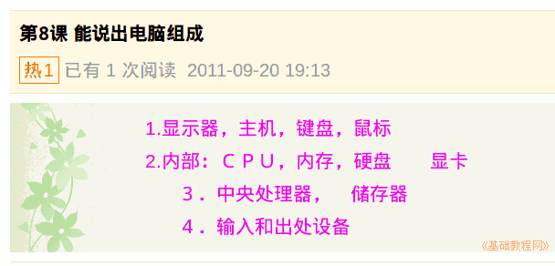

2011-2012 第一学期七年级电脑操作基础教学课程设计
作者：TeliuTe 来源：基础教程网
八、能说出电脑组成 返回目录 下一课学习目标：学习电脑的硬件组成；
注意事项：记住相应的名词概念；
1、电脑组成
1）电脑的外观是由显示器，主机，键盘，鼠标组成；
2）电脑的内部是ＣＰＵ，内存，硬盘，显卡；
3）重要的是中央处理器和存储器；
4）分类可以分为输入和出处设备；

课后记 2011-9-20 18:14：
学习电脑硬件组成本节学习了电脑组成的基础知识，如果你成功地完成了练习，请继续学习下一课内容；
本教程由86团学校TeliuTe制作|著作权所有
基础教程网：http://teliute.org/
美丽的校园……
转载和引用本站内容，请保留版权信息和本站链接。